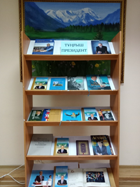
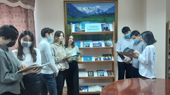

1 декабря казахстанцы отмечают Государственный праздник–День Первого Президента Казахстана, который был принят Сенатом Парламента РК. Празднование Дня Первого Президента Республики Казахстан – это дань уважения Главе государства за его выдающиеся заслуги. В связи с этим 29 ноября в читальном зале библиотеки была оформлена книжная выставка «Тұңғыш Президент» посвященной к Дню Первого Президента Республики Казахстан Н. А. Назарбаева. Были выставлены все книги о Н. А. Назарбаеве и его произведении. В ходе обзора выставки читатели познакомились с биографическими сведениями о первом Президенте, его неутомимой деятельностью по укреплению государственности Независимого Казахстана, по продвижению преобразовательных реформ во всех сферах нашей жизни, по укреплению международного статуса Казахстана. Все посетители выслушали информацию о жизни и произведениях Президента РК.
 